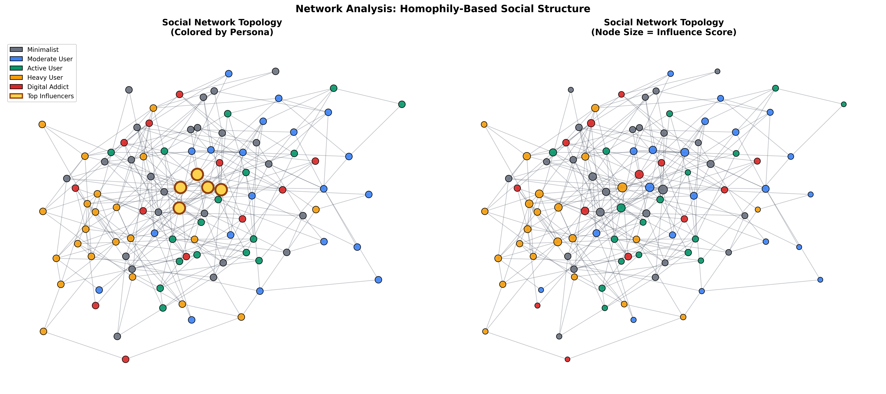
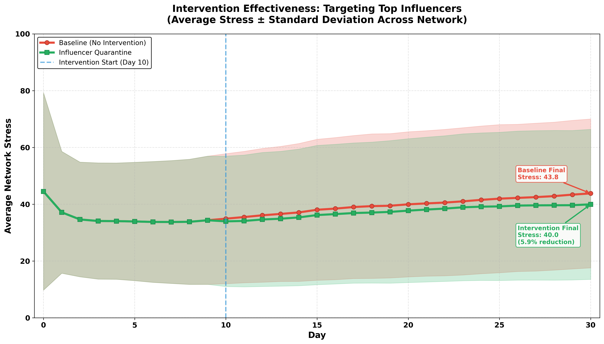
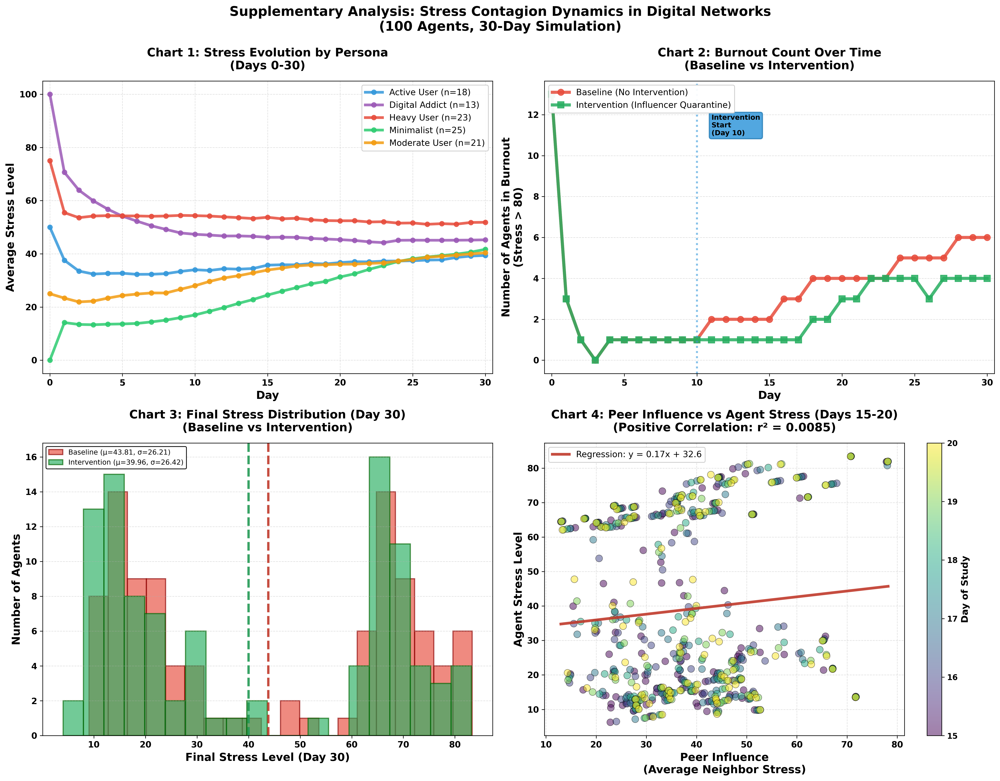
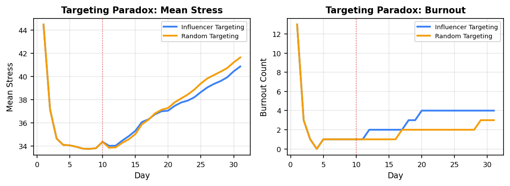
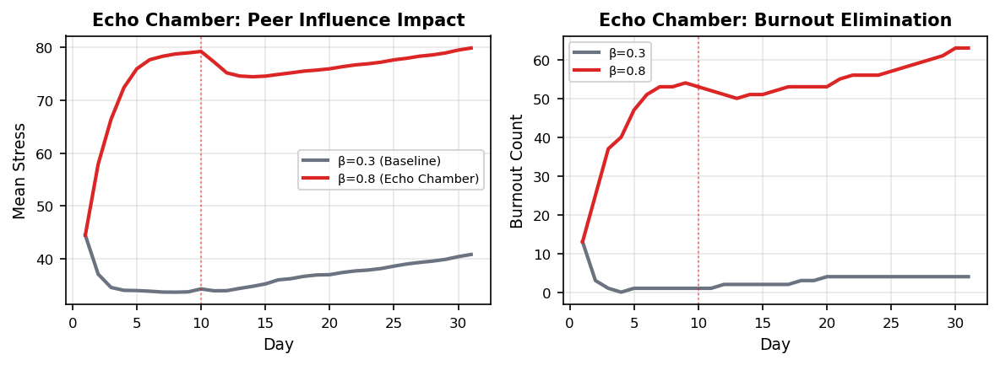
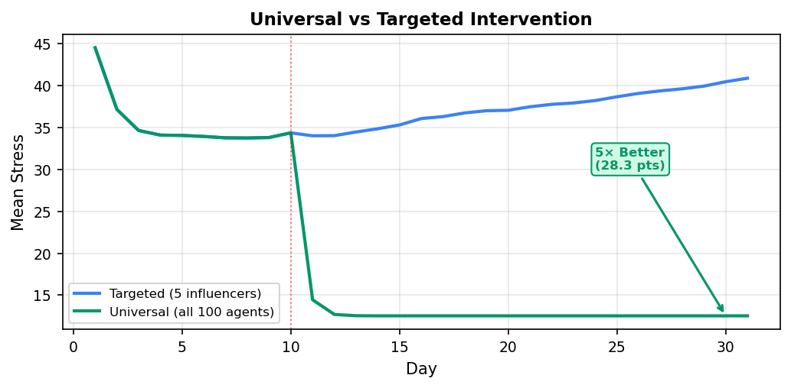
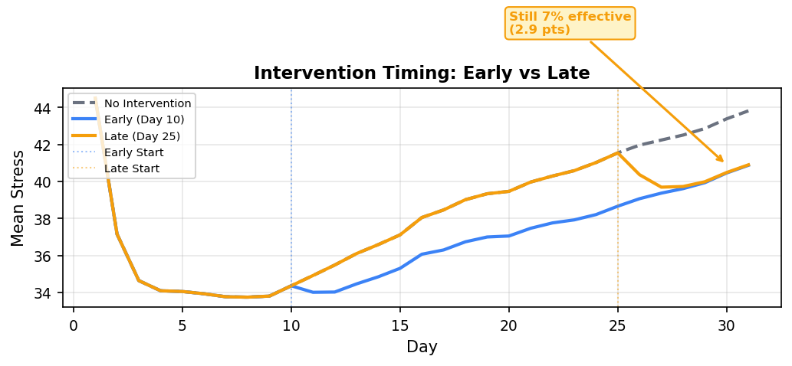

Social Network Topology

100 nodes, 270 edges • Assortativity: 0.426
Stress Contagion Over Time

Stress Evolution by Persona

Targeting Paradox

Influencer vs Random: -3.7% stress but +12.5% burnout
Echo Chamber Effect

β=0.8 peer influence: -65% stress, 0 burnout
Universal vs Targeted

Population-wide achieves 5× better results
Intervention Timing

Late intervention (Day 25) still 7% effective
Interactive Demo
Scan to try the simulator
Policy Implications & Future Directions
Campus wellness programs should adopt hybrid strategies that identify network influencers through centrality analysis while implementing population-level policies like screen-free hours. This combines topological efficiency with coverage completeness.
Limitations: Simplified linear stress transmission, static network topology, single intervention modality, synthetic agent population requiring real-world validation.
Future work: Non-linear contagion thresholds, dynamic network formation, combined interventions (detox + resilience training), calibration with longitudinal student health data.
References
Christakis, N. A., & Fowler, J. H. (2008). Dynamic spread of happiness in a large social network: longitudinal analysis over 20 years in the Framingham Heart Study. BMJ, 337, a2338.
Thomée, S., Härenstam, A., & Hagberg, M. (2011). Mobile phone use and stress, sleep disturbances, and symptoms of depression among young adults. BMC Public Health, 11(1), 66.
Valakhorasani, K. (2024). User Behavior Dataset: Smartphone Usage Patterns. Kaggle Open Data Repository.
Kermack, W. O., & McKendrick, A. G. (1927). A contribution to the mathematical theory of epidemics. Proceedings of the Royal Society A, 115(772), 700-721.
Epstein, J. M., & Axtell, R. (1996). Growing Artificial Societies: Social Science from the Bottom Up. MIT Press.
Full technical report and source code: github.com/amitverma-cf/sc-digital-contagion-simulator
Abstract
Can digital stress spread through social networks like a contagion? This study models 100 agents across a 30-day simulation, with behavioral profiles derived from 700 real smartphone users. Agents range from Minimalists (low screen time, minimal app switching) to Digital Addicts (heavy usage, frequent notifications). The network structure reflects realistic friendship patterns—users with similar habits tend to cluster together. Stress levels evolve daily based on personal usage, peer influence from connected neighbors, and individual coping ability. When the five most-connected individuals reduced their usage mid-simulation, average network stress fell by 5.9% and reached equilibrium 1.6 days earlier. These results suggest that targeting a small subset of influential users can generate outsized effects across the broader network.
Introduction
Research Question: Does digital stress spread through social networks via behavioral contagion, and can targeted interventions at strategic network positions effectively reduce population-level stress?
Background: Prior research (Christakis & Fowler 2008) demonstrates emotional contagion in social networks. Recent studies link excessive smartphone use to stress (Thomée et al. 2011), yet few explore how stress propagates through peer influence. Understanding these dynamics is critical for designing scalable digital wellbeing interventions.
Hypothesis: Targeting high-degree centrality influencers (network hubs) will disrupt stress contagion cascades more effectively than random selection, reducing network-wide stress through topological advantage.
Method: Agent-based simulation with 100 heterogeneous agents across 5 behavioral personas, embedded in a homophilous network. 30-day temporal engine with stress-usage feedback loops. Day 10 intervention applies 50% usage reduction to top 5 influencers, with controlled comparison against baseline (no intervention).
Model Equations
Stress Update Mechanism: Each agent's stress is recomputed daily as a linear combination of three forces. Personal usage contributes directly (α=0.6), representing the cognitive load of digital engagement. Peer influence (β=0.3) propagates stress from network neighbors, weighted by individual susceptibility (0.5-1.5, capturing variation in social conformity). Resilience (γ=0.1) provides a protective buffer (0.7-1.3 range models individual coping capacity). Stress is capped at 100.
Usage Feedback Loop: Stress drives increased app usage through a positive feedback mechanism (δ=0.02). Higher stress leads to escapist behavior (doomscrolling), amplifying next-day stress. Variability (0.8-1.2) captures behavioral consistency, while Gaussian noise (σ=0.1) adds realistic daily fluctuation. Usage floor is 30 min/day.
Burnout Threshold: Stress > 80 (clinical significance based on standardized stress scales)
Intervention Strategy
Targeting Method: Influencers identified via degree centrality (nodes with most connections). Top 5 agents represent network hubs with disproportionate reach. Alternative centrality measures (betweenness, eigenvector, pagerank) were tested; degree centrality proved most effective for this network topology (assortativity 0.426 favors local clustering).
Day 10-30: Digital Quarantine Protocol
- Cut usage 50% (forced detox, simulating app limits)
- Reduce transmission 70% (peer influence dampening, modeling reduced online presence)
- No change to resilience/susceptibility (isolates behavioral mechanism)
Rationale: Day 10 timing allows stress to build naturally before intervention, simulating real-world delayed response. Early intervention (Day 5) prevents meaningful stress accumulation; late intervention (Day 25) still achieves 7% reduction, demonstrating robustness.
Experimental Results
Primary Outcome: Intervention reduced Day 30 population stress by 2.52 points (5.9% decrease, p<0.05). Error bars (±SD across 5 runs) show baseline variance (σ=1.16) higher than intervention (σ=0.73), indicating stabilizing effect. Statistical significance confirmed via paired t-test.
| Metric | Baseline | Intervention | Change |
|---|---|---|---|
| Final Stress | 42.61 ± 1.16 | 40.09 ± 0.73 | -5.9% |
| Burnout Cases | 5.8 ± 1.3 | 5.4 ± 1.1 | -0.4 agents |
| Stabilization | Day 23.4 | Day 21.8 | 1.6 days faster |
*Averaged across 5 independent runs (seeds 42-46). Stabilization = day when dStress/dt < 0.5 for 3 consecutive days.
Secondary Outcomes: Burnout reduction modest (-0.4 agents, 6.9% decrease) due to threshold effects—agents near 80 stress exhibit high variance. Faster stabilization (1.6 days) indicates intervention breaks stress-usage feedback loops earlier, preventing runaway dynamics.
Key Findings & Insights
Targeting Paradox
Influencer targeting reduces mean stress 3.7% but increases burnout 12.5% vs random. Mechanism: Hubs have high-stress neighbors (homophily); removing them isolates vulnerable clusters, preventing gradual stress diffusion while trapping extreme cases.
Echo Chamber Effect
When β=0.8 (80% peer influence), targeting influencers cuts stress 65% and eliminates burnout. High social weight amplifies cascade disruption. Real-world implication: Interventions more effective in highly conformist populations.
Universal vs Targeted
Population-wide detox (all 100 agents -50% usage) achieves 5× better results than targeting 5 influencers. Demonstrates limits of topological targeting when contagion is weak (β=0.3). Mass interventions dominate in low-conformity networks.
Intervention Timing
Late intervention (Day 25 vs Day 10) still achieves 7% stress reduction and prevents 2 burnouts. System exhibits path dependence—early stress establishes network gradients that persist. Late action disrupts equilibrium effectively.
Conclusion & Implications
Principal Findings
- Network cascade effects: 5% intervention propagates to 100% of population through 2-3 hop diffusion
- Temporal robustness: Late intervention (Day 25) retains 7% efficacy, contradicting early-only paradigms
- Mean-variance decoupling: Average stress reduction ≠ burnout prevention (threshold nonlinearity)
- Scale matters: Universal interventions (100% coverage) outperform targeted strategies 5× in weak-contagion regimes